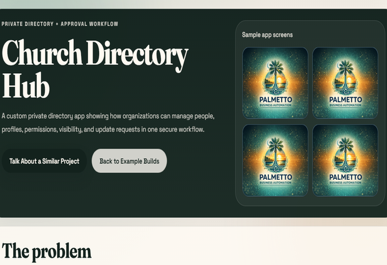
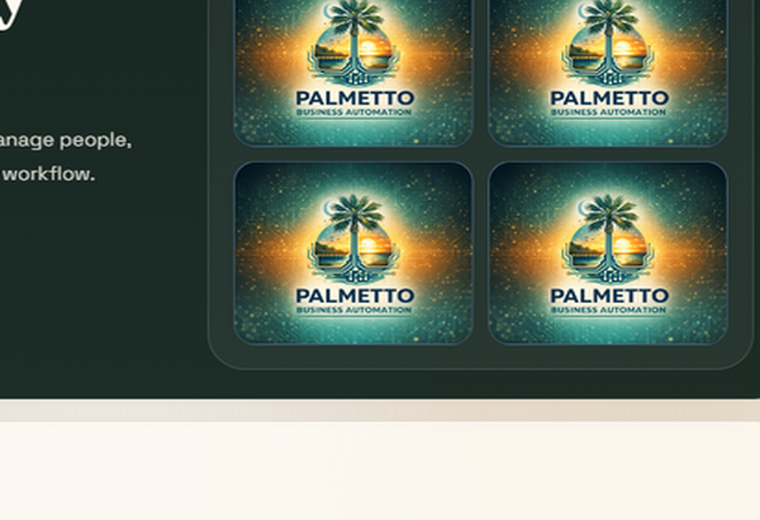
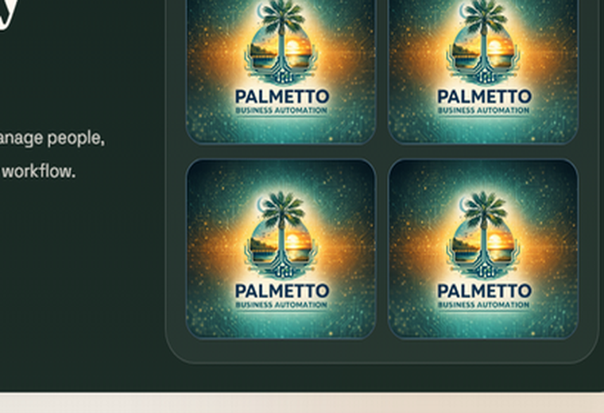
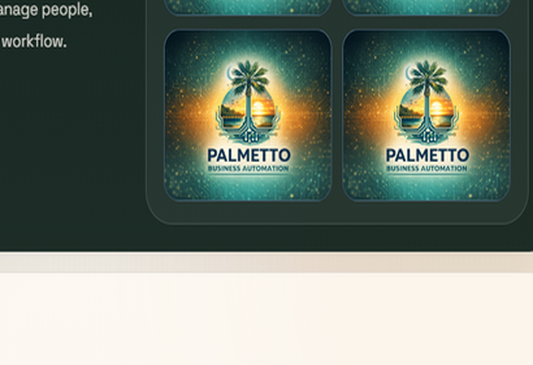

Private Directory + Approval Workflow
Church Directory Hub
A custom private directory app showing how organizations can manage people, profiles, permissions, visibility, and update requests in one secure workflow.
Sample app screens




The problem
Many organizations manage member, client, employee, or contact information across spreadsheets, emails, PDFs, or outdated lists. That creates stale data, duplicate work, and confusion about what information is current or visible.
What was built
A branded private directory with searchable profiles, role-based access, admin approval, privacy controls, and member or user update requests.
Key features
How it works
Sample screens
Directory grid
Searchable family cards with visibility labels and sample photos.
Household profile
Member detail layout with contact controls and update history.
Admin queue
Approval queue for new signups and submitted profile edits.
Update request
Simple form for members to request changes without direct edit access.
Privacy settings
Visibility controls for contacts, photos, and directory fields.
Business value
This pattern can also be used for
Have a workflow like this?
If your business or organization is managing data, approvals, orders, requests, or reports through spreadsheets and email, Palmetto Business Automation can help turn that process into a custom web app.